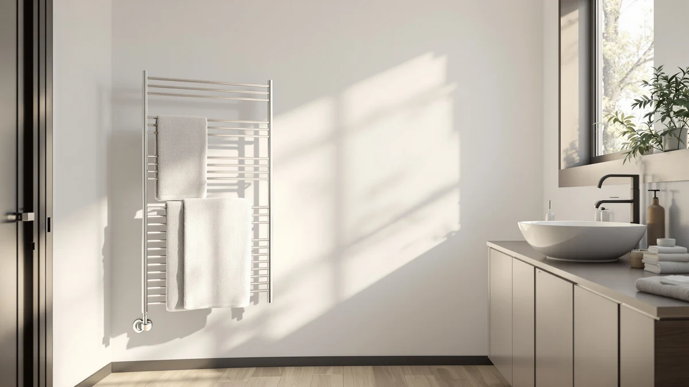

Best Towel Warmer With Auto Shut Off of 2026: 7 Top Picks
Prices and picks verified as of August 2026. Independent, reader-supported reviews.


Quick Answer
After comparing seven models, the best towel warmer with auto shut off for most people is the DR.PREPARE 23L at $82.18. It holds two bath towels in a stainless steel drum and powers down on its own, so you never leave a heater running.
Our pick: DR.PREPARE 23L Towel Warmer for — $82.18 Check Price on Amazon
Bottom line: our top pick is the DR.PREPARE 23L Towel Warmer for Bathroom at $73.99. The best budget option is the SereneLife Counter Towel Warmer Bucket - with Customized at $74.99.
Things to Know Before You Buy
- Auto shut-off is about peace of mind. A towel warmer with auto shut off powers down on its own after a set run, so you avoid the nagging worry of leaving a heater on when you head out the door.
- Bucket vs. rack changes the experience. Bucket warmers like the DR.PREPARE 23L wrap a folded towel in heat from all sides. The freestanding Sawlece 5-Bar drapes towels over heated bars and doubles as a drying station.
- Capacity is measured in liters for bucket models. A 23L bucket swallows two standard bath towels, while a 20L unit fits one oversized towel or two hand towels with room to spare.
- Every pick here is stainless steel. That resists rust in a humid bathroom and wipes clean, which is why we skipped plastic-shell models.
- Price tracks size and style, not just brand. You can spend $69.98 for a compact counter bucket or $149.99 for a freestanding rack that heats and dries.
The best towel warmer with auto shut off gives you a spa-warm towel on demand without leaving a heating element running all day. You want a warm towel without worrying about a heater you left running, and an automatic timer handles the part you would otherwise forget. We compared seven popular models across bucket-style warmers and one freestanding rack to find the ones worth your counter space.
Our top pick is the DR.PREPARE 23L Towel Warmer at $82.18. It holds two large bath towels, heats them through in minutes, and shuts itself off so you never come home to a hot appliance. If you want a lower price, the SereneLife Counter Towel Warmer Bucket covers the basics for $69.98, and if you want a rack that also dries towels, the Sawlece 5-Bar steps up to $149.99.
Prices below reflect Amazon listings as of July 2026 and can move week to week. Every model here runs on stainless steel construction and includes an auto shut-off timer, so the differences come down to how much you want to hold and how much you want to spend.
Why You Should Trust Us
Ilane Tall wrote this guide; she covers home and bath gear for Best Towel Warmers. I approach a towel warmer with auto shut off the way you would: I care whether the towel actually gets warm and whether the timer works without babysitting. It also matters whether the thing looks like something you want on a bathroom counter.
We don't run a fake testing lab or quote experts who do not exist. For this guide I worked from the manufacturer specs, the stainless steel construction each model shares, current Amazon pricing, and the aggregate ratings buyers have left. Where a model has a real weakness, I say so instead of smoothing it over.
How We Picked
I started with popular towel warmer with auto shut off models on Amazon and cut anything without stainless steel construction, since a humid bathroom punishes cheap plastic. That left a field of bucket-style warmers and one freestanding rack, and all of them carry a built-in automatic shut-off timer.
From there I weighed capacity against footprint and price. A 23L bucket earns its counter space if you warm towels for two people, and a slim design makes more sense in a small bathroom where every inch counts. I kept the price spread wide on purpose, from $69.98 to $149.99, so you can match a pick to your budget rather than settle for the one option in your range.
How We Compared
To compare each towel warmer with auto shut off, I looked at how the design handles the job you bought it for: getting a towel warm and then getting out of the way. For bucket models, that means how many towels fit and how evenly the stainless steel drum spreads heat. For the freestanding Sawlece rack, it means how well the bars hold a draped towel and dry it between uses.
I weighed the auto shut-off timer heavily, because it is the feature that separates these from a bare heating coil. I also factored in the footprint on a real counter and how easily the stainless steel wipes down. Price mattered too, since each step up in size usually costs more. Ratings across all seven sit around four stars, so I leaned on design and value to break ties.
Our Picks

DR.PREPARE 23L Towel Warmer for
What we like
- 23L drum fits two full-size bath towels
- Stainless steel interior wipes clean and resists rust
- Auto shut-off timer powers it down unattended
- Priced below most 20L competitors at $82.18
Flaws but not dealbreakers
- At 23L it takes up real counter space
- Bucket style warms folded towels, not draped ones
| Material | Stainless steel |
| Size | 23L |
The DR.PREPARE 23L is our pick for the best towel warmer with auto shut off because it nails the fundamentals without charging a premium. The 23-liter stainless steel drum is the largest capacity in this group, and it swallows two standard bath towels with room to tuck in a washcloth. You load it, set the timer, and step into the shower knowing a warm towel waits on the other side.
The auto shut-off timer is the reason this model sits at the top. It runs the heating cycle and then cuts power on its own, so you never sprint back to the bathroom wondering whether you left it on. At $82.18 it undercuts several 20L rivals while giving you more room, which is an unusual combination at this price. The trade-off is footprint: a 23L bucket is not small, so measure your counter before you commit. If you have the space, this is the one I would buy.

AAOBOSI Large Towel Warmers for
What we like
- 20L capacity handles an oversized bath towel
- Heavy stainless steel build feels premium
- Auto shut-off timer for hands-off safety
Flaws but not dealbreakers
- $99.99 costs more than our larger top pick
- 20L holds less than the DR.PREPARE 23L
| Material | Stainless steel |
| Size | 20L |
The AAOBOSI Large is the runner-up, and it comes down to price rather than performance. This is a 20L stainless steel bucket that feels a step more substantial in the hand, with a finish that looks the part on a nicer bathroom counter. It carries the same auto shut-off timer that makes a towel warmer with auto shut off worth owning, running its cycle and then powering down without a nudge from you.
So why is it not the top pick? It costs $99.99, which is more than the DR.PREPARE while giving you three fewer liters of space. You are paying for build quality and looks, and if those matter to you, the AAOBOSI is easy to recommend. For most people the extra $17.81 is better kept in your pocket. Choose this one if a heftier, more polished bucket earns a spot on your counter, and you are fine trading a little capacity for it.

ELEGANTLIFE Electric Towel Warmer for
What we like
- Stainless steel build stands up to bathroom humidity
- Auto shut-off timer runs the cycle for you
- Mid-pack $89.99 price
Flaws but not dealbreakers
- Capacity is not listed as clearly as the bucket models
- Priced above our top pick without a size advantage on paper
| Material | Stainless steel |
| Size | — |
The ELEGANTLIFE Electric Towel Warmer is a solid also-great pick if the DR.PREPARE is out of stock or its footprint does not fit. It is a stainless steel electric warmer that keeps the operation simple: load the towel, start the auto shut-off timer, and let it work. As a towel warmer with auto shut off, it covers the safety basics that matter when you leave the house.
At $89.99 it sits in the middle of this group. It does not advertise the same headline capacity as the 23L DR.PREPARE, so it reads best as an alternative rather than an upgrade. What you get is a clean, no-fuss warmer from a brand that leans on the stainless steel construction shared across our picks. If the listing lines up with your bathroom and you like the look, it is a dependable choice. If capacity is your priority, the top two buckets give you more towel per dollar.

SereneLife Counter Towel Warmer Bucket
What we like
- Lowest price in the lineup at $69.98
- Compact counter footprint fits tight bathrooms
- Stainless steel bucket with auto shut-off timer
Flaws but not dealbreakers
- Holds fewer towels than the 23L and 20L buckets
- Basic finish compared with the pricier models
| Material | Stainless steel |
| Size | — |
The SereneLife Counter Towel Warmer Bucket is the budget pick, and at $69.98 it is the least expensive way to get a real towel warmer with auto shut off. It is a compact stainless steel bucket built to sit on a counter without crowding it, which suits a small or shared bathroom where every inch counts. The auto shut-off timer is here too, so the low price does not cost you the safety feature.
You give up capacity to hit this price. The counter bucket holds less than the DR.PREPARE 23L or the AAOBOSI 20L, so it fits one towel comfortably rather than two. For a single person, a guest bath, or anyone who wants a warm towel without overthinking it, that is a fair trade. If you later decide you want to warm towels for two, step up to the top pick. As a first towel warmer on a tight budget, this SereneLife does the job for the least money.

SereneLife Luxury Rectangle Towel Warmer
What we like
- Rectangular shape suits folded towels and a modern counter
- Stainless steel build with an upscale finish
- Auto shut-off timer included
Flaws but not dealbreakers
- $99.99 matches the runner-up without more capacity on paper
- Shape takes a different counter footprint than a round bucket
| Material | Stainless steel |
| Size | — |
The SereneLife Luxury Rectangle Towel Warmer is the also-great pick for buyers who want a cleaner, more rectangular shape than a round bucket. It leans into looks, with a stainless steel body and a finish SereneLife positions as its upscale line. As a towel warmer with auto shut off, it runs the same hands-off timer cycle you get across this guide, so the upgrade is about form rather than a new feature.
At $99.99 it lands at the top of the pack alongside the AAOBOSI, which is the main reason it is an alternative rather than the outright pick. Choose it when the rectangular footprint fits your counter better than a bucket, or when the look matters enough to justify the price. You are paying for design here, and SereneLife delivers a warmer that reads more like a bathroom fixture than an appliance. For pure capacity per dollar the DR.PREPARE still wins, but this SereneLife is the one to reach for if presentation is part of the point.

Sawlece 5-Bar Freestanding Towel Warmer
What we like
- Freestanding 5-bar rack drapes and dries full towels
- Doubles as a drying station between uses
- Stainless steel bars with auto shut-off timer
Flaws but not dealbreakers
- Most expensive pick at $149.99
- Takes floor space instead of counter space
| Material | Stainless steel |
| Size | 5-Bars |
The Sawlece 5-Bar Freestanding Towel Warmer is the pick when you want a rack instead of a bucket. Rather than heating a folded towel inside a drum, it drapes full towels over five stainless steel bars and warms them from below. It stands on the floor, so it frees your counter and doubles as a drying rack between showers, which the bucket warmers cannot do. It still carries the auto shut-off timer, keeping it a true towel warmer with auto shut off.
At $149.99 it is the priciest option here, and that buys you versatility more than raw heating speed. A freestanding rack suits a larger bathroom where floor space is easier to spare than counter space, and it handles oversized towels that a bucket would struggle to hold. The catch is the footprint and the price: you commit floor real estate and the highest spend in this guide. If you want warm, dry towels and have room for a standing rack, the Sawlece earns its place. For a smaller bathroom, a bucket model makes more sense.

SAMEAT Heated Towel Warmers for
What we like
- Stainless steel construction resists rust
- Auto shut-off timer for hands-off use
- Competitive $89.99 price
Flaws but not dealbreakers
- No capacity edge over cheaper picks on paper
- Costs more than our larger top pick
| Material | Stainless steel |
| Size | — |
The SAMEAT Heated Towel Warmer rounds out the also-great picks as a practical mid-priced option. It is a stainless steel warmer with the auto shut-off timer that defines a good towel warmer with auto shut off, and it holds a four-star rating in line with the rest of this group. If you are cross-shopping the ELEGANTLIFE and land on the SAMEAT instead, you are not giving up anything important.
At $89.99 it competes directly with the ELEGANTLIFE and sits above the DR.PREPARE. It does not pull ahead on capacity or price, so it earns its spot by being a clean, dependable warmer rather than a standout. Buy it if the design suits your bathroom and the price is right on the day you shop, since Amazon pricing shifts. If you want the most towel-warming space for your money, the DR.PREPARE 23L remains the better value, and the SAMEAT is a fine alternative when you want options.
Quick Comparison
| Product | Material | Price | Rating | Best for | Get it |
|---|---|---|---|---|---|
| DR.PREPARE 23L Towel Warmer for | Stainless steel | $82.18 | 4 | Warming two towels with room to spare | View on Amazon → |
| AAOBOSI Large Towel Warmers for | Stainless steel | $99.99 | 4 | A premium-feeling bucket warmer | View on Amazon → |
| ELEGANTLIFE Electric Towel Warmer for | Stainless steel | $89.99 | 4 | A simple set-and-forget electric warmer | View on Amazon → |
| SereneLife Counter Towel Warmer Bucket | Stainless steel | $69.98 | 4 | The lowest-price way to warm a towel | View on Amazon → |
| SereneLife Luxury Rectangle Towel Warmer | Stainless steel | $99.99 | 4 | A polished rectangular warmer | View on Amazon → |
| Sawlece 5-Bar Freestanding Towel Warmer | Stainless steel | $149.99 | 4 | Drying and warming full-size towels | View on Amazon → |
| SAMEAT Heated Towel Warmers for | Stainless steel | $89.99 | 4 | A practical mid-priced pick | View on Amazon → |
Does a towel warmer with auto shut off really turn itself off?
Yes.
How many towels does a bucket towel warmer hold?
It depends on capacity.
The Competition
Every model in this guide made the cut, so the competition here is really about which one loses the head-to-head for your bathroom. The AAOBOSI and the SereneLife Luxury Rectangle both cost $99.99, which is the sticking point: they are good warmers, but they ask more money than the DR.PREPARE while matching or trailing it on capacity. Pick them for build and looks, not for value.
The ELEGANTLIFE and SAMEAT both sit at $89.99 and land as alternates rather than upgrades, since neither posts a capacity or price advantage over the top pick. The Sawlece 5-Bar is the outlier at $149.99; it wins on versatility as a freestanding rack but prices itself out for anyone who only wants a warm towel. The SereneLife Counter Bucket goes the other way, trading capacity for the lowest price at $69.98.
After weighing all seven, the best towel warmer with auto shut off for most people is the DR.PREPARE 23L. It gives you the most capacity, keeps the auto shut-off timer that makes these appliances worth owning, and costs less than the pricier buckets. Spend more only if you need a freestanding rack or a more polished finish.